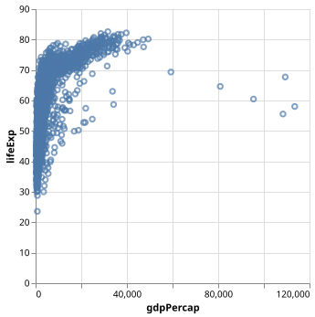
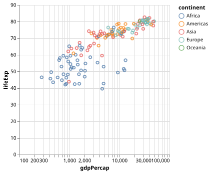
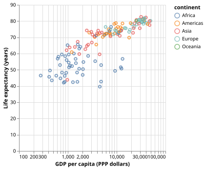

Plotting the Gapminder dataset
Loading and plotting a dataset
In this lesson will work with one of the Gapminder datasets.
Let us together read and plot the data and then we explain what is happening and we will improve the figure together. First we read and inspect the data:
# import necessary libraries
import altair as alt
import pandas as pd
# read the data
url_prefix = "https://raw.githubusercontent.com/plotly/datasets/master/"
data = pd.read_csv(url_prefix + "gapminder_with_codes.csv")
# print overview of the dataset
data
With very few lines we can get the first plot:
alt.Chart(data).mark_point().encode(
x="gdpPercap",
y="lifeExp",
)

First raw plot with all countries and all years.
Observe how we connect (encode) visual channels to data columns:
x-coordinate with “gdpPercap”
y-coordinate with “lifeExp”
The following code would have the same effect but the above version might be easier to read:
alt.Chart(data).mark_point().encode(x="gdpPercap", y="lifeExp")
Let us pause and explain the code
altis a short-hand foraltairwhich we imported on top of the notebookChart()is a function defined insidealtairwhich takes the data as argumentmark_point()is a function that produces scatter plotsencode()is a function which encodes data columns to visual channels
Filtering data directly in Vega-Altair
In Vega-Altair we can chain functions. Let us add two more:
alt.Chart(data).mark_point().encode(
x="gdpPercap",
y="lifeExp",
).transform_filter(alt.datum.year == 2007).interactive()

Now we only keep the year 2007.
Using color as additional channel
A very neat feature of Vega-Altair is that it is easy to add and modify visual channels. Let us try to add one more so that we do something with the “continent” data column:
alt.Chart(data).mark_point().encode(
x="gdpPercap",
y="lifeExp",
color="continent",
).transform_filter(alt.datum.year == 2007).interactive()

Using different colors for different continents.
Changing to log scale
For this data set we will get a better insight when switching the x-axis from linear to log scale (we changed two lines to show both the “method syntax” and the “attribute syntax”):
alt.Chart(data).mark_point().encode(
x=alt.X("gdpPercap").scale(type="log"),
y=alt.Y("lifeExp"),
color="continent",
).transform_filter(alt.datum.year == 2007).interactive()

Changing the x axis to log scale.
Improving axis titles
alt.Chart(data).mark_point().encode(
x=alt.X("gdpPercap").scale(type="log").title("GDP per capita (PPP dollars)"),
y=alt.Y("lifeExp").title("Life expectancy (years)"),
color="continent",
).transform_filter(alt.datum.year == 2007).interactive()

Improving the axis titles.
Faceted charts
To see what faceted charts are and how easy it is to do this, add the following line:
alt.Chart(data).mark_point().encode(
x=alt.X("gdpPercap").scale(type="log").title("GDP per capita (PPP dollars)"),
y=alt.Y("lifeExp").title("Life expectancy (years)"),
color="continent",
row="continent",
).transform_filter(alt.datum.year == 2007).interactive()
Guess what happens when you change row="continent" to column="continent"?
Changing from points to circles
Let us add one more visual channel, mapping size of the circle to the population size of a country:
alt.Chart(data).mark_circle().encode(
x=alt.X("gdpPercap").scale(type="log").title("GDP per capita (PPP dollars)"),
y=alt.Y("lifeExp").title("Life expectancy (years)"),
color="continent",
size="pop",
).transform_filter(alt.datum.year == 2007).interactive()

Circle sizes are proportional to population sizes.
Where to go from here?
In few steps and few lines of code we have achieved a lot!
These plots are perhaps not publication quality yet but we will learn how to customize and improve in Customizing plots.
Keypoints
Avoid manual post-processing, try to script all steps.
Browse a number of example galleries to help you choose the library that fits best your work/style.
Figures for presentation slides and figures for manuscripts have different requirements. More about that later.